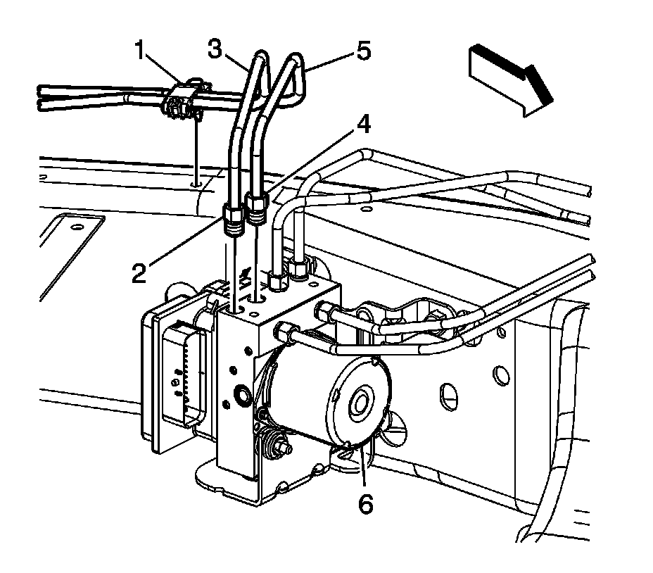
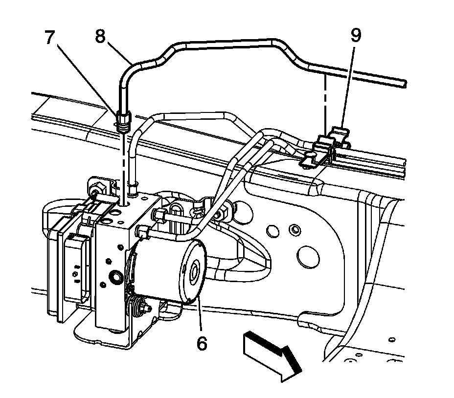
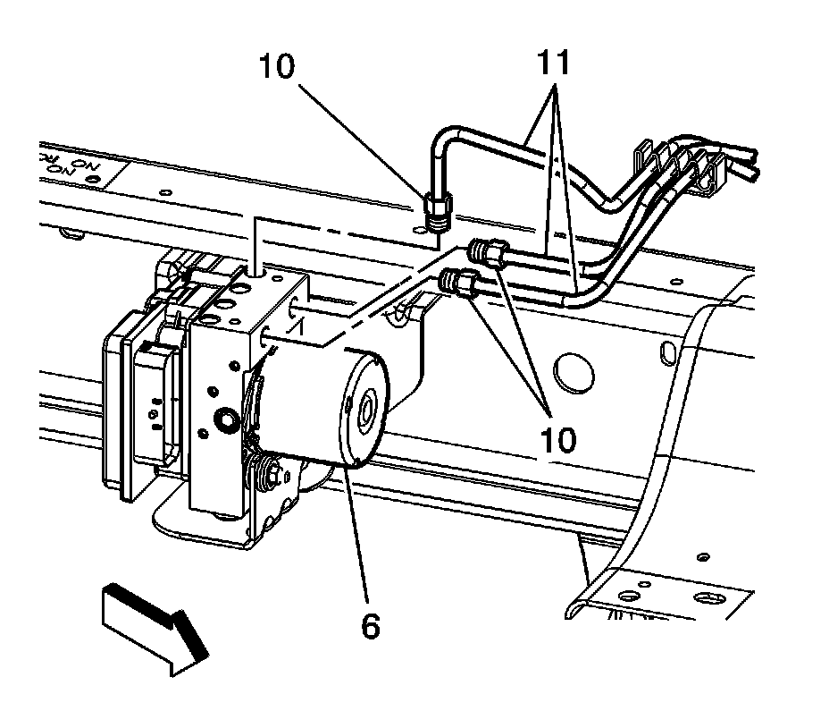
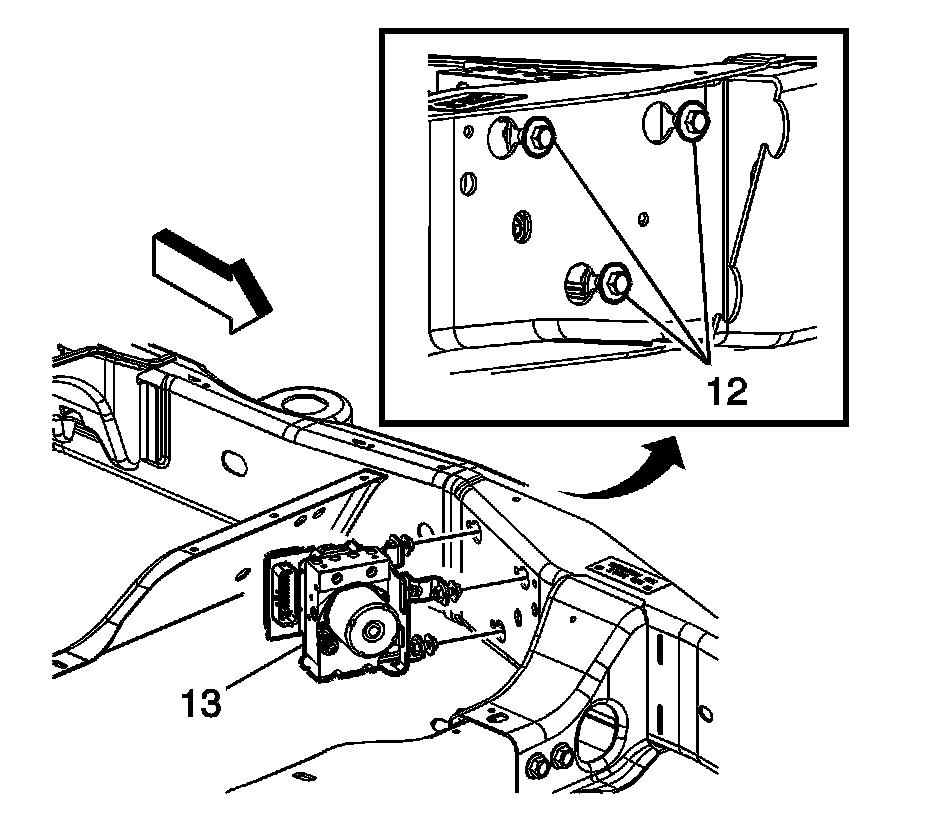
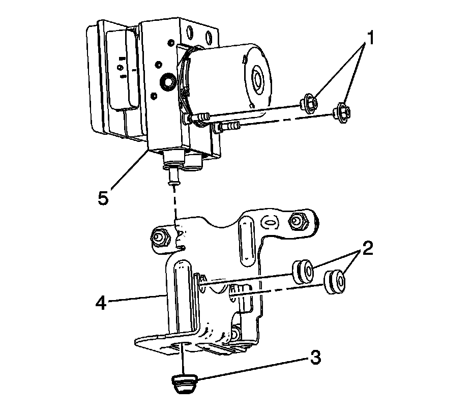
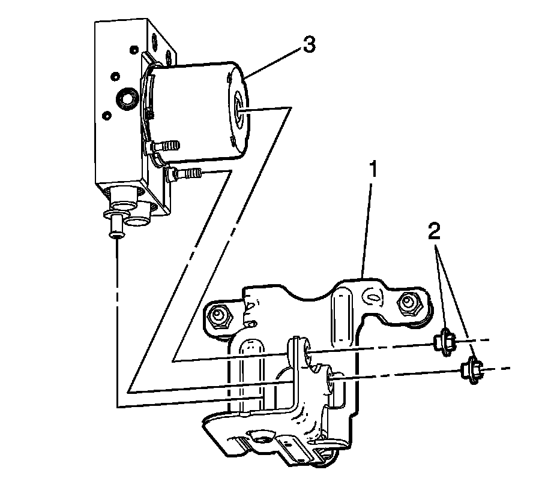

Brake Pressure Modulator Valve Replacement (With JL4)
Brake Pressure Modulator Valve Replacement (W/JL4)
Removal Procedure
Caution: Refer to Brake Fluid Effects on Paint and Electrical Components Notice.
Caution: Refer to Brake Fluid Irritant Caution.
Notice: Refer to Brake Fluid Effects on Paint and Electrical Components Notice.
Important: Cap the brake pipes to prevent brake fluid loss and contamination.
1. Raise and support the vehicle. Refer to Lifting and Jacking the Vehicle.
2. Clean all dirt and debris from the BPMV assembly and the brake pipe fittings.
3. Disconnect the electronic brake control module (EBCM) electrical connector.
Important: Note the location of the brake pipes to the BPMV for proper installation.

4. Release the brake pipe retaining clip (1) from the frame.
5. Disconnect the rear brake pipe fittings (2) and (4) from the BPMV (6).
6. Remove the rear brake pipes (3) and (5) from the BPMV (6).

7. Disconnect the front brake pipe fitting (7) from the BPMV (6).
8. Remove the front brake pipe (8) from the BPMV (6) and the retaining clip (9).

9. Disconnect the front brake pipe fittings (10) from the BPMV (6).
10. Remove the front brake pipes (11) from the BPMV (6).

Important: It is not necessary to remove the BPMV bracket bolts.
11. Loosen the BPMV bracket bolts.
12. Slide the BPMV and bracket assembly toward the front of the vehicle and remove the assembly from the vehicle frame.
13. If necessary, remove the EBCM from the BPMV. Refer to Electronic Brake Control Module Replacement.
Important: DO NOT pry against the accumulator piston caps on the bottom of the BPMV.

14. If removing the BPMV bracket (4) from the BPMV (5), loosen the BPMV mounting nuts (1).
15. Carefully lift the BPMV from the bracket to release the front grommets (2)
16. Release the BPMV from the lower grommet (3).
Installation Procedure
1. If removed, install the EBCM.

2. Position the BPMV (3) to the mounting bracket (1).
Notice: Refer to Fastener Notice.
3. Install the retaining nuts (2) to the BPMV (3).
Tighten to 9 N.m (80 lb in).
4. Position the BPMV and bracket assembly (13) to the frame.
5. Slide the BPMV assembly toward the rear of the vehicle.
6. Install the BPMV bracket bolts (12).
Tighten the bolts to 22 N.m (16 lb in).
7. Position the front brake pipes (11) to the BPMV (6).
8. Install the front brake pipe fittings (10).
Tighten the fittings to 18 N.m (13 lb ft).
9. Position the front brake pipe (8) to the BPMV.
10. Install the front brake pipe fitting (7).
Tighten the fitting to 18 N.m (13 lb ft).
11. Position the retaining clip (9) to the frame.
12. Position the rear brake pipes (3) and (5) to the BPMV (6).
13. Install the rear brake pipe fittings (2) and (4).
Tighten the fittings to 18 N.m (13 lb ft).
14. Position the retaining clip (1) to the frame.
15. Connect the EBCM electrical connector.
16. Bleed the BPMV.